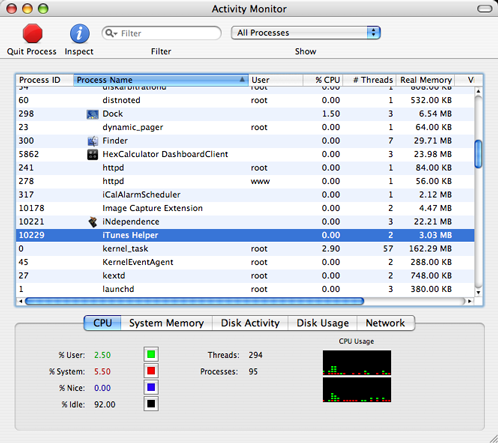

Brug af iNdependence
Brugerfladen er rimelig simpel. Fanerne er arrangeret som følger:
- Aktivering/SIM - Opgaver, der har med aktivering og SIM-oplåsning af din telefon at gøre.
- Jailbreak - Til opgaver der har med jailbreak af din telefon at gøre (dvs. gør dig i stand til at læse og skrive fra hele telefonens filsystem).
- SSH - Til opgaver, der har med installering og vedligegørelse af SSH at gøre (er nødvendig for at installere tredjepartsprogrammer).
- Personliggør - Til opgaver, der har med personliggørelse af din telefon at gøre (programmer, ringetoner og baggrunde).
- Firmware - Opgaver, der har med op- og nedgradering af firmwaren på din telefon at gøre.
- Information - Giver detaljeret information om din telefons status.
Der er også en statusbar nederst som giver dig et hurtigt overblik over hvad iNdependence har gang i og statusinformation om din telefon.

Notes
Før du bruger iNdependence, skal du afbryde iTunes Helper så det ikke forstyrrer iNdependence.
For at gøre dette kan du køre /Programmer/Hjælpeprogrammer/Aktivitetsovervågning og søg efter en proces kaldet iTunes Helper og klik på Slut proces-knappen. Vælg derefter Afbryd.

Brug af forskellige firmware-udgaver
Hvis du kigger i statusbaren nederst i iNdependence-vinduet, kan du se hvilken firmwareudgave, du har på din telefon.

- Hvis du bruger firmware 1.1.3, kan du se mere information på denne side
- Hvis du bruger firmware 1.1.1 eller 1.1.2, kan du se mere information på denne side
- Hvis du bruger firmware 1.0.2 eller lavere, kan du se mere information på denne side